S26#
Avtor: Jana Bregar
Datum izdelave: 2024-05-27
Koda seminarja: S26
Vhodni podatek#
Povezava do datoteke z vhodnim podatkom: S26
Rezultati analiz#
Ime in izvorni organizem proteina#
Ta podatka sem pridobila tako, da sem najprej poiskala zaporedje vektorja pUC57. Vhodno zaporedje sem preuredila tako, da se začne na istem mestu kot vektor. Potem sem zaporedji poravnala z EMBOSS Water, ki naredi lokalno poravnavo zaporedij. Iz vhodnega zaporedja sem odstranila dele zaporedja, ki se prekrivajo, da ostane samo vključek. Nukleotidno zaporedje za vključek sem vstavila v xblast, tako sem ugotovila, da vhodno zaporedje ustreza proteinom iz superdružine metalo-beta-laktamaz iz hidrokarbonskega metagenoma. Dobljeno zaporedje sem potem vstavila v pblast in našla, da zaporedje zapisuje protein MBL fold metalo-hidrolazo iz Syntrophomonadaceae bacterium.
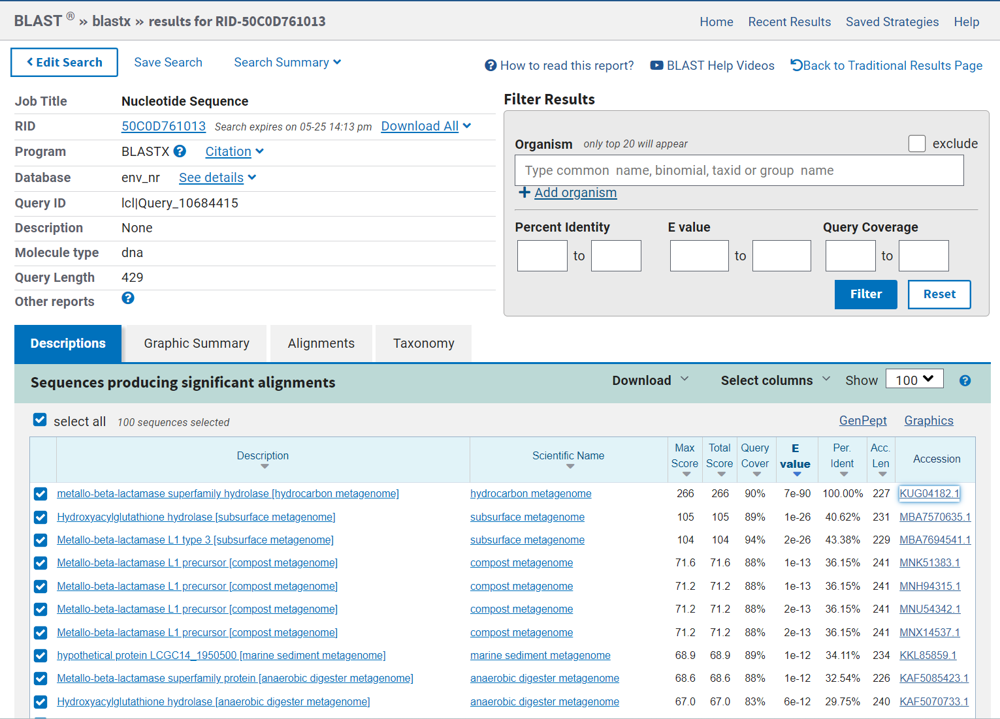 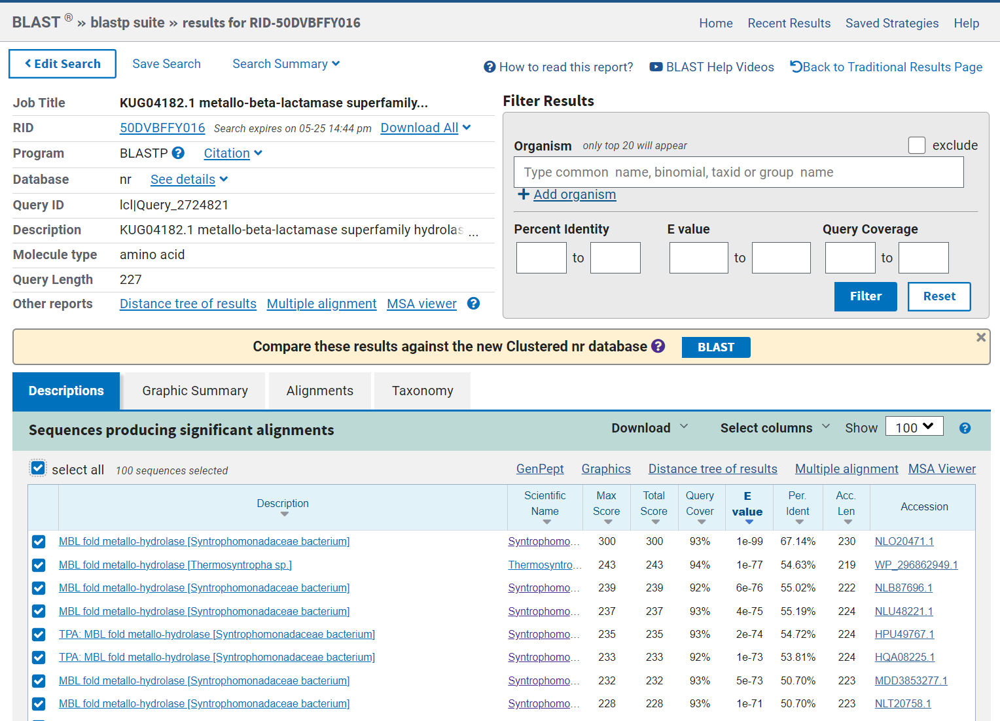
Lokalizacija, topologija#
Protein se nahaja v periplazmi. Ta podatek sem pridobila tako, da sem s pblastom poiskala podobne proteine v anotirani zbirki. Pred iskanjem sem izbrala zbirko UniProtKB/Swiss-Prot(swissprot). Pri podobnih bakterijskih proteinih, kot je metalo-beta-laktamaza L1 tipa 3, je zapisano da sem protein nahaja v periplazmi, zato sem sklepala, da se tudi MBL fold metalo-hidrolaza iz Syntrophomonadaceae bacterium tam nahaja. Podatke o topologiji proteina sem našla na UniProtu. Znova sem poiskala podobne proteine v anotirani zbirki. Podobni proteini, kot je protein z UniProt kodo O34409, nimajo hidrofobnih regij, zato sem sklepala, da jih tudi MBL fold metalo-hidrolaza iz Syntrophomonadaceae bacterium nima, zato ni transmembranski protein.
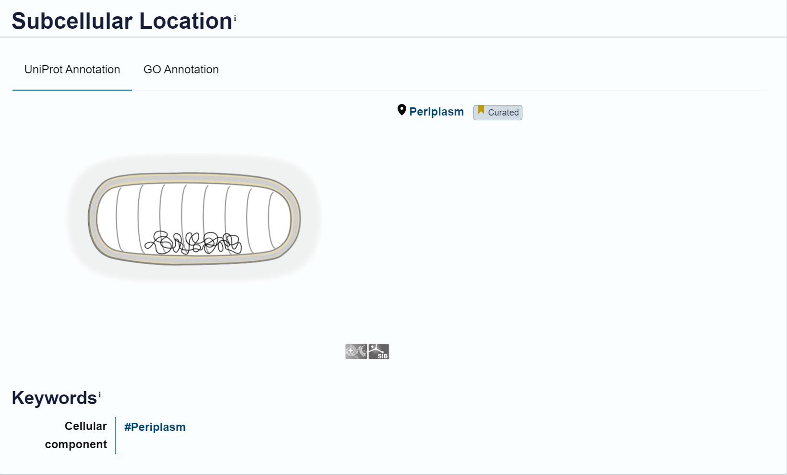 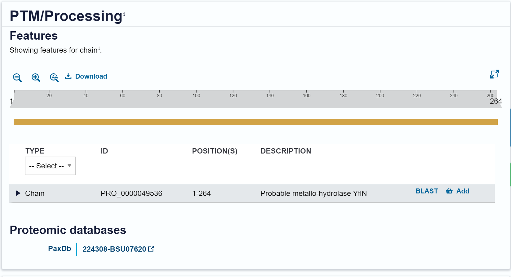
Velikost proteina#
Podatek o velikosti proteina sem pridobila iz GenBank zapisa. Protein ima 230 aminokislinskih ostankov.
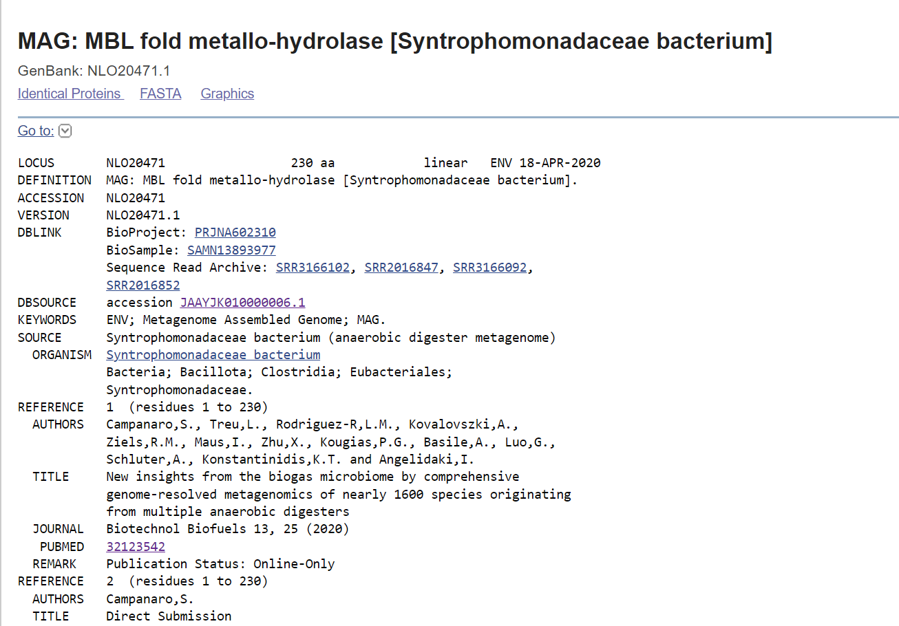
Domenska zgradba#
Protein vsebuje metalo-beta-laktamazno domeno. Ta podatek sem pridobila tako, da sem s pblastom v zbirki UniProtKB/Swiss-Prot(swissprot) poiskala podobne anotirane proteine. Tako sem dobila kodo za UniProt in tam je povezava do InterPro. Podobni proteini, kot je protein z UniProt kodo O34409, imajo metalo-beta-laktamazno domeno, zato sem sklepala, da ima enako domeno tudi MBL fold metalo-hidrolaza iz Syntrophomonadaceae bacterium.
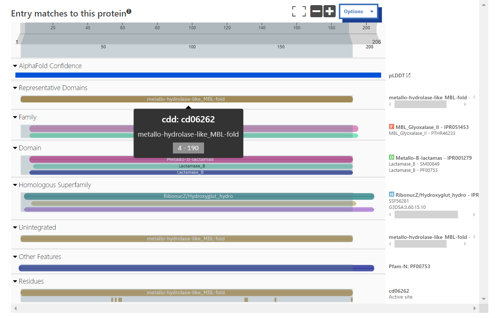
Posttranslacijske modifikacije#
Protein nima posttranslacijskih modifikacij. Ta podatek sem pridobila tako, da sem s pblastom v zbirki UniProtKB/Swiss-Prot(swissprot) poiskala podobne anotirane proteine Podobni proteini, kot je protein z UniProt kodo O34409, nimajo anotiranih nobenih posttranslacijskih modifikacij in iz sem sklepala, da jih tudi moj protein nima.
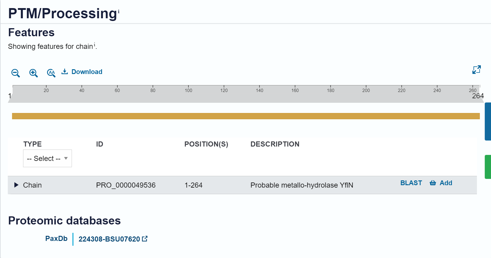
Funkcija proteina#
Te podatke sem pridobila tako, da sem poiskala podoben anotiran protein s pblastom v zbirki UniProtKB/Swiss-Prot(swissprot). Našla sem protein metalo-beta-laktamaza L1 tipa 3 z UniProt kodo P52700. Iz podatkov, ki so bili anotirani pri tem proteinu, sem sklepala, da je moj protein encim. Je hidrolaza, ki bakteriji omogoča rezistenco na različne beta-laktamske antibiotike, tako da hidrolizira beta-laktamski obroč. Njegov substrat so spojine z beta-laktamskim obročem.
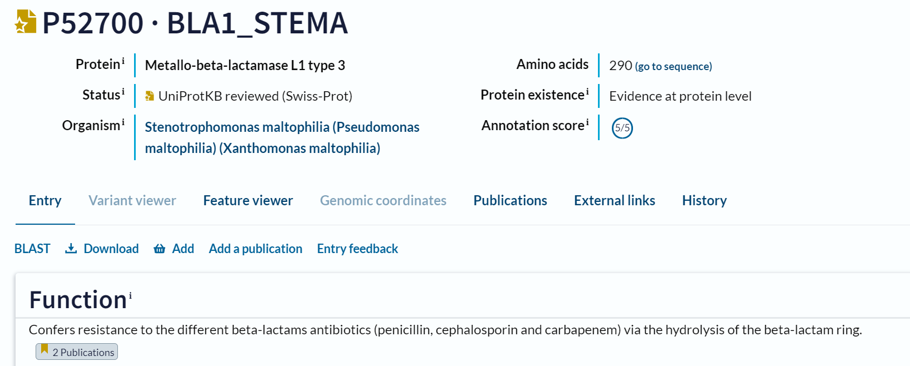
Sorodni proteini#
S filogenetskim drevesom na osnovi zaporedij za MBL fold metalo-hidrolazami iz različnih organizmov sem lahko sklepala, kakšna je sorodnost med MBL fold metalo-hidrolazami iz različnih organizmov. Za izračun poravnave sem uporabila Clustal Omega, drevo sem skonstruirala s Clustal Phylogeny in za vizualizacijo sem uporabila program phylo.io. Visoko stopnjo genske povezanosti imajo MBL fold metalo-hidrolaze iz Anaerolineales bacterium in Syntrophales bacterium ter Bacillota bacterium in Thermosyntroph lipolytica, saj so na filogenetskem drevesu tesno skupaj. Iz tega sem sklepala, da imajo MBL fold metalo-hidrolaze v teh organizmih enako ali pa vsaj podobno funkcijo. MBL fold metalo-hidrolaze iz skupin Chlorobiota bacterium in Deltaproteobacteria bacterium pa niso tesno skupaj na filogenetskem drevesu, zato sem sklepala, da imajo različne poti evolucije. MBL fold metalo-hidrolaze iz teh skupin se verjetno razlikujejo v funkciji.
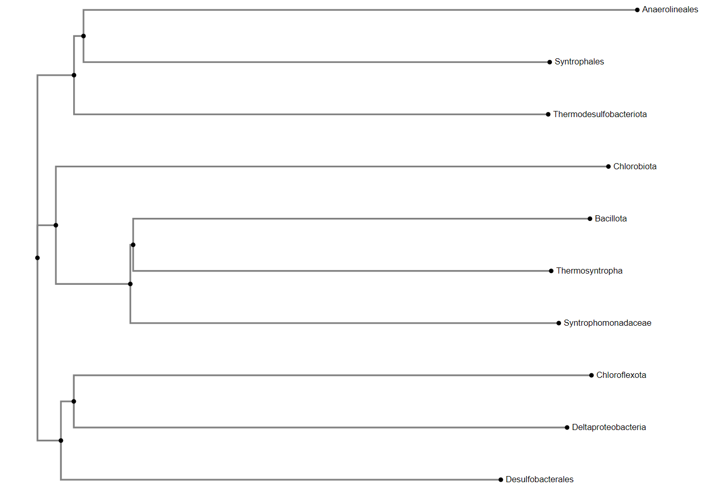
Najbolj in najmanj ohranjene regije#
Najbolj in najmanj ohranjene regije sem poiskala tako, da sem zbrala zaporedja homologov mojega proteina iz različnih organizmov, za izračun poravnave sem uporabila orodje Clusal Omega in potem uporabila WebLogo, ki ustvari logotip zaporedja in vizualno pokaže ohranjenost vsakega mesta zaporedja . Kofaktor proteina, za katerega zapisuje vključek, je najverjetneje cink. To sem sklepala iz zapisa na UniProtu za podobne proteine. Predvidevala sem, da bodo vezavna mesta za cink najbolj ohranjena, ker je ta potreben za funkcionalnost proteina. Na UniProtu je tudi zapisano, da sta na vezavnih mestih za cink aminokislinska ostanka histidin ali pa asparaginska kislina. Iz analize poravnav z WebLogo je razvidno, da so mesta z aminokislinskima stankoma histidinom in asparaginsko kislino dobro ohranjena. Primerjala sem rezultat analize poravnave z WebLogo z zapisom anotiranega podobnega proteina na UniProtu in ugotovila, da se ta mesta visoke ohranjenosti relativno ujemajo. Razlike v natančnih mestih ujemanja, so lahko posledica evolucijskih sprememb, zato sem še vedno sklepala, da sta aminokislinska ostanka histidin in asparaginska kislina ključna za funkcionalnost proteina, saj vežeta kofaktor cink. Iz analize poravnav z WebLogo je razvidno, da so najmanj ohranjene regije na začetku in na koncu zaporedja, kar je pričakovano, saj imajo te regije večjo strukturno in funkcionalno fleksibilnost.
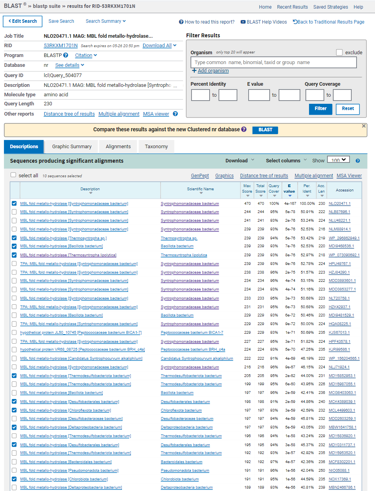 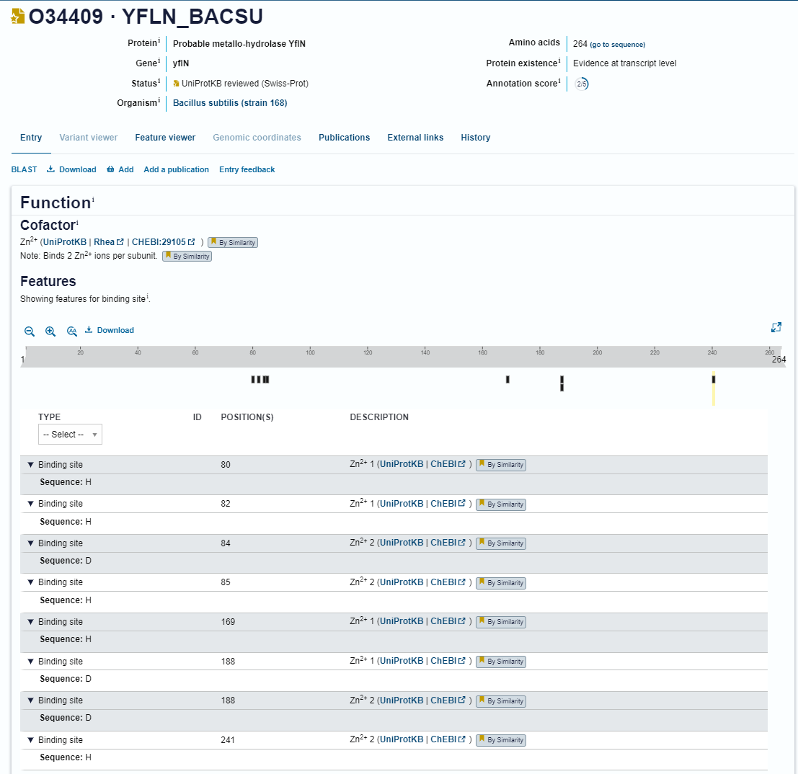 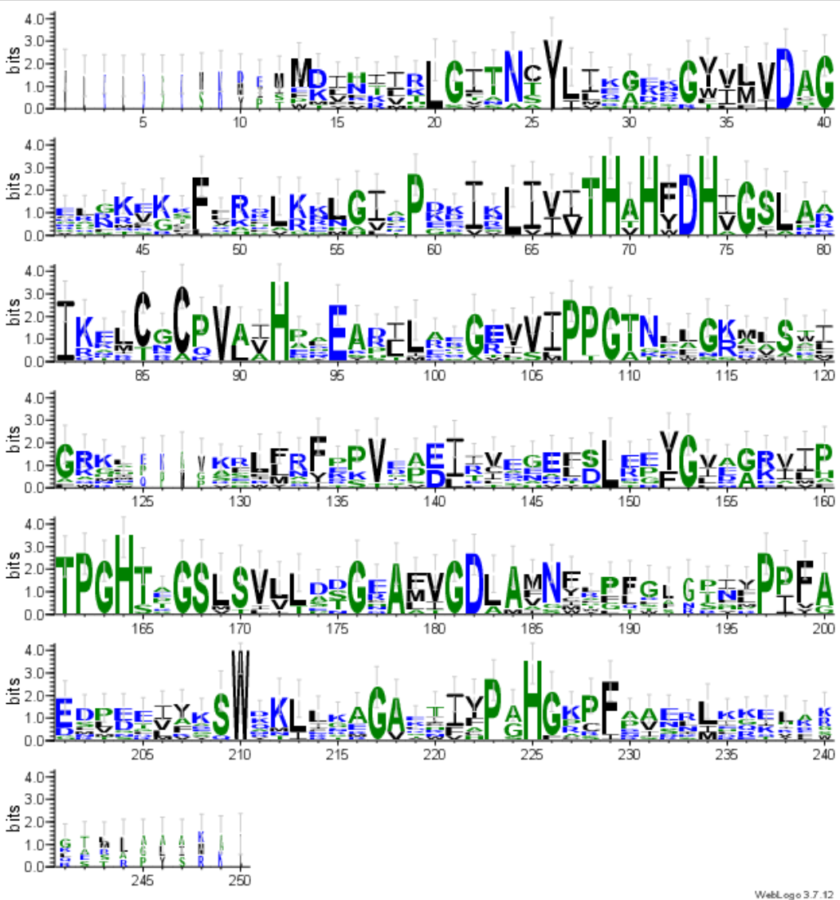
Podobni eukariontski proteini#
Podobne eukationtske proteine sem poiskala s pblastom, tako da sem izbrala za organizem eukaryotes. Eden od podobnih eukariontiskih proteinov je endoribonukleaza LACTB2 iz Xenopus laevis, to je vrsta afriške žabe. Ta encim cepi enoverižno RNA na 3´ koncu, kjer je purin povezan s pirimidinom. Ne deluje na dvoverižni RNA ali DNA. Po cepitvi RNA, s tem encimom nastane na 3´ koncu prosta -OH skupina.
 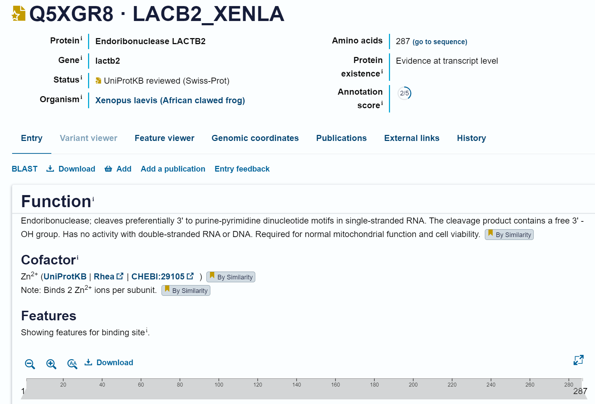
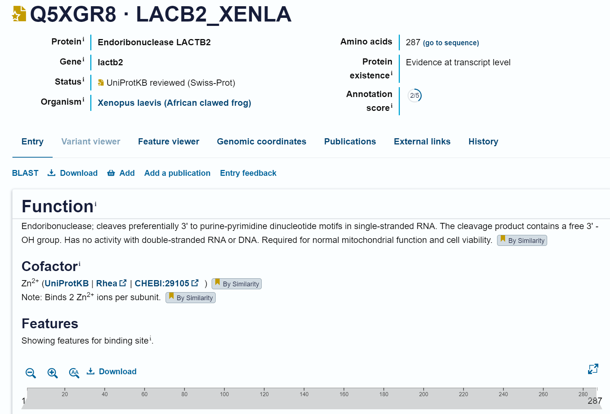
Model strukture#
Za pripravo modela strukture sem uporabila AlphaFold2 v obliki ColabFold. Nizka zanesljivost je samo na C- in na N-koncu proteina, kar je pričakovano, saj so te regije najbolj fleksibilne. Primerjala sem model strukture mojega proteina z modelom strukture podobnega eukariontskega in prokariontskega proteina. Eksperimentalno določen model strukture podobnega eukariontskega proteina sem poiskala s pblastom v zbirki Protein Data Bank proteins(pdb) in za organizem sem izbrala eucaryotes. Dobila sem samo en zadetek, to je človeški protein 1 z metalo-beta-laktamazno domeno. Podoben prokariontski protein sem poiskala na enak način, samo da nisem uporabila filtra za organizem. Za primerjavo modelov strukture sem izbrala beta-laktamazo iz Cronobacter sakazakii. Človeški protein 1 z metalo-beta-laktamazno domeno in beta-laktamaza iz Cronobacter sakazakii vsebujeta metalo-beta-laktamazno domeno kot MBL fold metalo-hidrolaza iz Syntrophomonadaceae bacterium protein. Naredila sem superpozicijo modela strukture proteina, ki sem ga pridobila z AlphaFoldom, in eksperimentalno določenega modela strukture človeškega proteina 1 z metalo-beta-laktamazno domeno s PDB kodo 4V0H. Model strukture MBL fold metalo-hidrolaze je na sliki zelene barve, model strukture človeškega proteina 1 z metalo-beta-laktamazno domeno pa z vijolično. Iz superpozicije lahko vidimo, da se strukturi proteina ne ujemata popolnoma. Približno se ujemajo položaji beta ploskev in nekaterih alfa vijačnic. Naredila sem tudi superpozicijo modela strukture beta-laktamaze iz Cronobacter sakazakii in modela strukture mojega proteina MBL fold metalo-hidrolaze. Model strukture MBL fold metalo-hidrolazo iz Syntrophomonadaceae bacterium proteina je označen z oranžno, model strukture hidroksiacilglutation hidrolaze pa z zeleno. Iz superpozicije lahko vidimo, da je ujemanje boljše v primerjavi s superpozicijo z eukariontskim proteinom, to je smiselno saj tudi moj protein prihaja iz prokarionta. Ker pa so se deli modela strukture mojega proteina ujemali z deli strukture eukariontskega in prokariontskega proteina, sklepam da je beta-laktamazna domena ohranjena med različnimi organizmi.
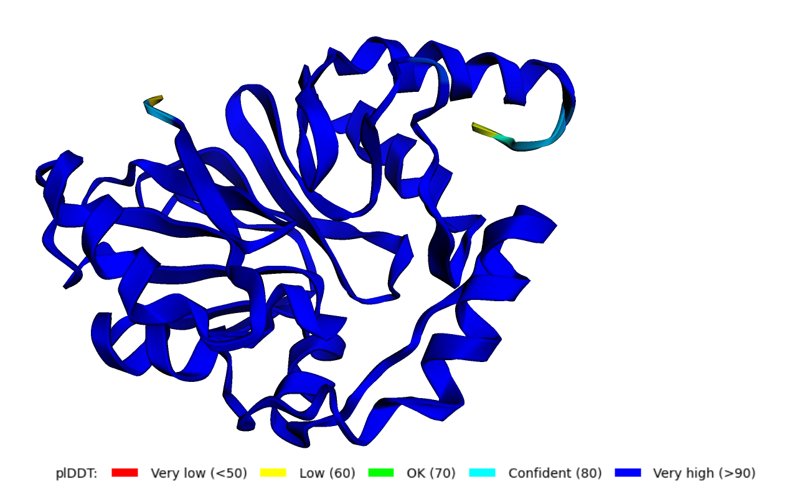 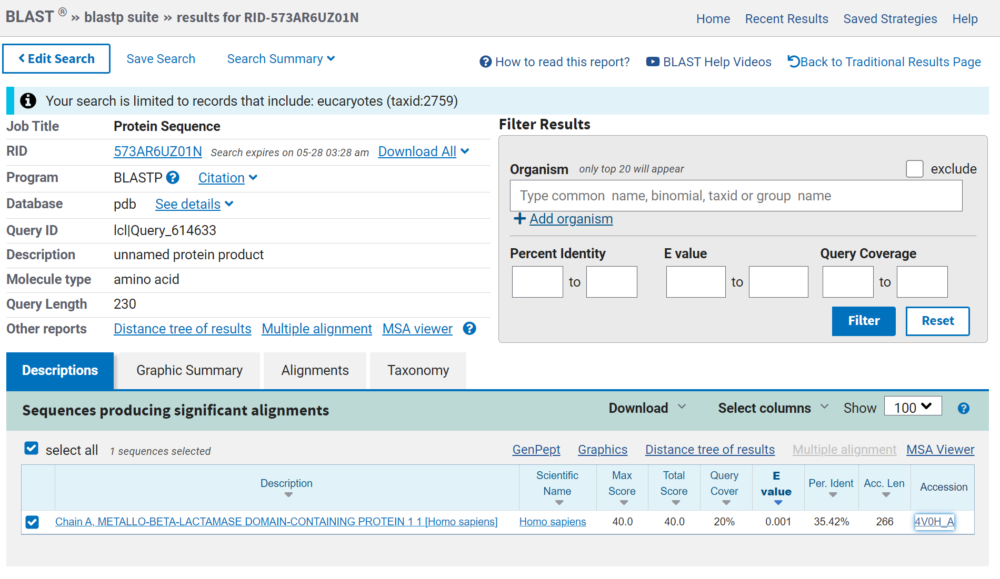 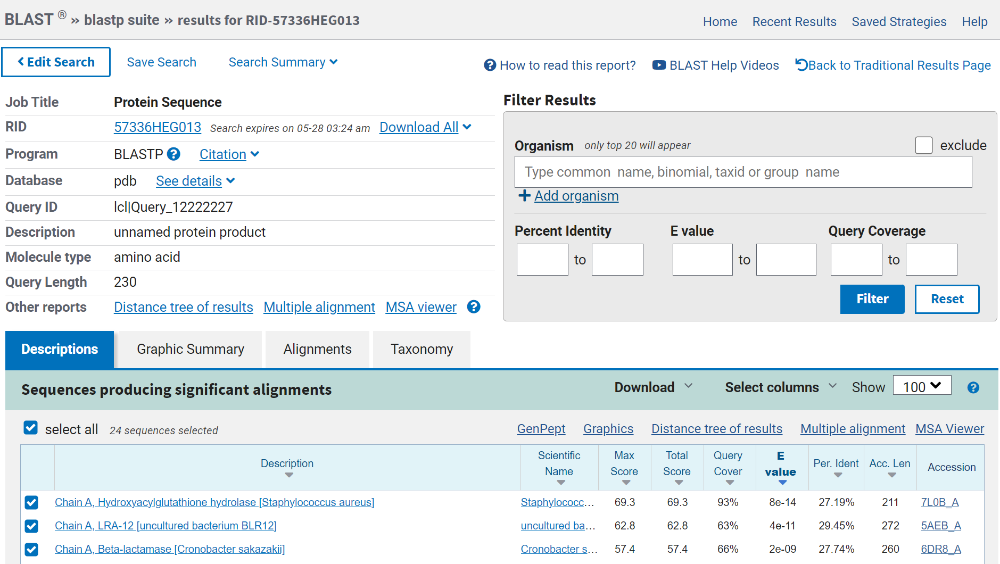 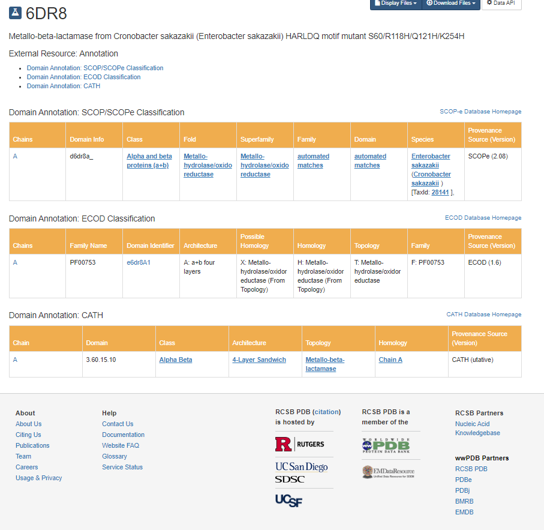 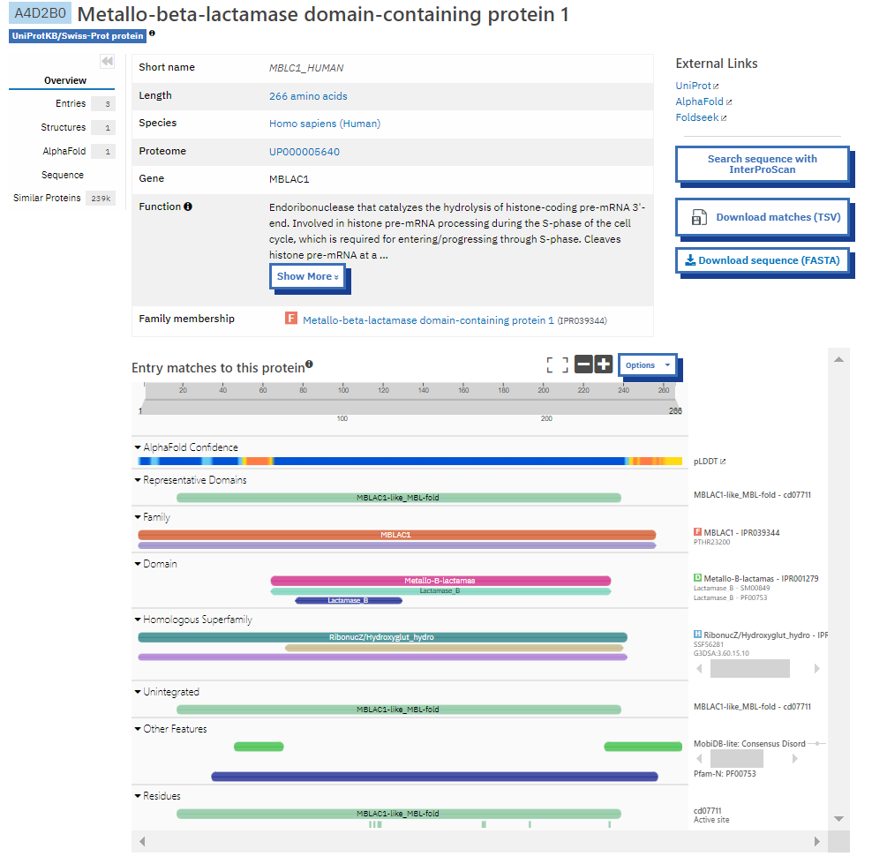 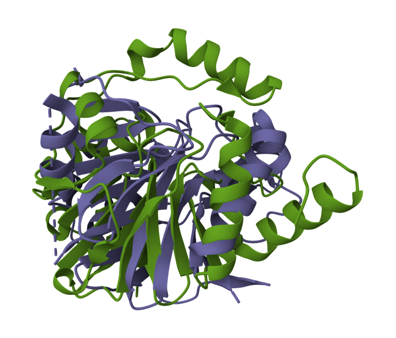 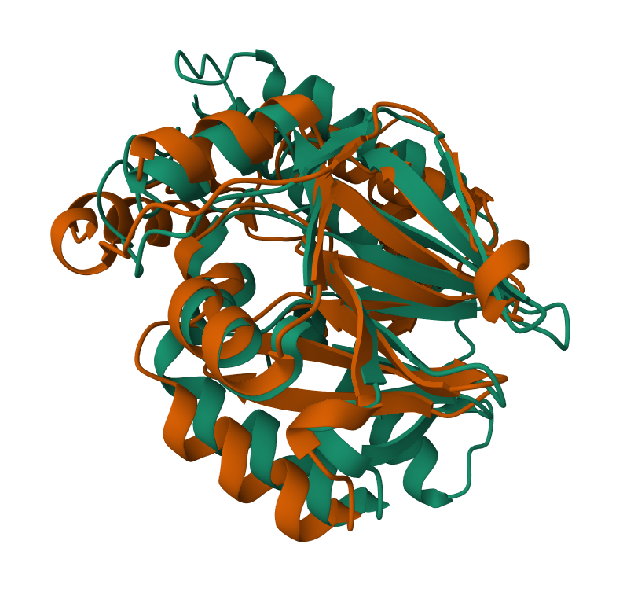